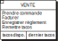
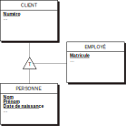
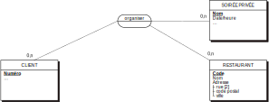
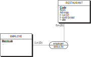
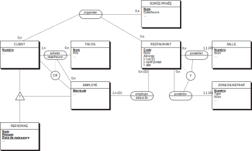
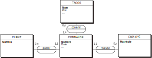
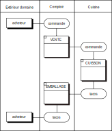
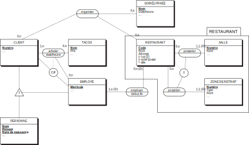

Merise est une méthode française d’analyse, de conception, de réalisation et de gestion de systèmes d’information.
Merise est née en 1978 sous l’impulsion du gouvernement français, grâce au travail de René Colletti, Arnold Rochfeld et Hubert Tardieu.
Elle vise à aider les entreprises et les différents organismes à mettre en place leurs systèmes d’information.
Elle a connu de nombreuses évolutions depuis, et est toujours considérée comme un standard pour la réalisation de projets d’envergure, en France et dans une moindre mesure dans le reste de l’Europe.
La méthode vise à englober l’intégralité des étapes de la mise en place d’un système d’information. Elle s’étale de l’analyse préalable à la remise en cause d’un projet.
Elle est avant tout conçue à l’origine pour les grands systèmes.
Merise est une méthode complète, large, très structurée. Elle est éprouvée depuis de nombreuses années.
Les formalismes qu’elle introduit sont largement utilisés en France et apportent une rigueur et une connaissance théorique utiles pour tous les projets informatiques ayant à traiter de l’information.
La théorie sur laquelle elle s’appuie est très poussée et apporte une vraie maitrise des sujets qu’elle traite.
La méthode est assez ancienne et propose certaines techniques qui ne sont pas pleinement adaptées aux méthodologies actuelles.
Elle est avant tout utilisée en France et propose de ce fait peu d’outils et de documentation autres que français.
Elle nécessite une rigueur et une quantité très importante de documentation avant la réalisation d’un projet.
Mettre en place un système d’information.
Merise propose d’attaquer le problème sous trois composantes, dont aucune ne peut être négligée :
La première dimension concerne la démarche derrière le projet, et propose un cycle de vie.
Elle propose des étapes détaillées, depuis le début du projet et sa conception jusqu’à sa réalisation et sa maintenance. Elle donne des outils pour la prise de décision et l’évolution du système.
Pour la mise en place du système d’information, il est nécessaire de conceptualiser les problèmes.
Le cycle d’abstraction permet de prendre du recul sur les problèmes rencontrés par l’organisation et de les amener à des solutions techniques et informatiques.
Pour mettre en place la solution, de nombreux choix doivent être pris, que ce soit au niveau de la définition du problème ou des outils techniques à choisir.
Le cycle de décision apporte les outils nécessaires pour faire les bons choix à chaque étape et s’assurer à tout moment que la réalisation de la solution est en adéquation avec les besoins.
La méthode est découpée en grandes étapes :
Première étape nécessaire au projet, le schéma directeur définit les orientations générales et donne les buts à atteindre à moyen terme pour le système d’information que l’on développe.
L’étude préalable comprend une analyse détaillée de la situation initiale et des solutions pouvant être mises en place.
À l’issue de l’étude préalable, une décision est prise quant à la réalisation ou non du projet.
Lorsque la décision est prise de réaliser la solution, l’étude détaillée reprend les résultats de l’étude préalable pour en approfondir la portée.
Après cette étude de conception générale, elle apporte des solutions complètes dans une étude de conception détaillée. À cette étape, le système d’information organisationnel est pleinement défini.
L’étude technique marque la fin de la conception et le début de la réalisation. Elle comporte les spécifications techniques complètes à destination des personnes qui implémenteront la solution.
La production logicielle correspond à l’écriture à strictement parler du code du système d’information. Elle comprend l’algorithmie, le stockage des données, les tests…
Lorsque le logiciel est prêt, il doit être mis en service pour que les utilisateurs finaux puissent l’utiliser. Cette étape répond à toutes les questions concernant la transition de l’ancien système au nouveau, que ce soit d’un point de vue technique ou organisationnel.
Lorsque le système est en utilisation, il nécessite des opérations de maintenance pour corriger les dysfonctionnements ou apporter de nouvelles fonctionnalités.
Cette étape correspond à un « rebouclage » plus ou moins complet sur les étapes de conception et de réalisation déjà effectuées.
Après une période d’utilisation, une remise en cause de l’intégralité du système peut arriver.
Cette remise en cause peut amener à des opérations de maintenance conséquentes, ou à la réalisation d’un nouveau projet en entier si les besoins originaux ont trop évolué.
Les problèmes que doivent résoudre les systèmes d’informations sont complexes et touchent de nombreux d’utilisateurs.
Pour mieux discerner les différents niveaux de réflexion, Merise propose quatre niveaux :
Les deux premiers niveaux correspondent à la conception du système d’information organisationnel, les deux autres à la conception du système d’information informatisé.
Le niveau conceptuel correspond aux choix de gestion. Il comprend la définition des besoins, des invariants, des activités.
Le niveau organisationnel correspond aux choix d’organisation mis en place pour répondre aux besoins, aux ressources et à leurs affectations.
Le niveau logique comprend les choix de technologies et de ressources logicielles nécessaires à la mise en œuvre du système d’information.
Le dernier niveau correspond au choix de matériel et de ressources techniques pour la mise en place de la solution.
Dans un système d’information, on est confronté à deux problématiques distinctes concernant les données : leur stockage et leurs flux.
Deux analyses distinctes sont nécessaires pour aborder ces deux problématiques. L’analyse statique s’attachera à déterminer comment structurer et garder les données, alors que l’analyse dynamique déterminera les différents échanges entre acteurs nécessitant d’accéder aux informations.
Pour répondre aux problématiques sur les données et les traitements pour les quatre niveaux d’analyse, des modèles spécifiques sont proposés par la méthode Merise :
| Données | Traitements | |
|---|---|---|
| Conceptuel | MCD | MCT |
| Organisationnel | MOD | MOT |
| Logique | MLD | MLT |
| Physique | MPD | MPT |
Au-delà du cycle de vie et du cycle d’abstraction, il est nécessaire tout au long de l’avancement du projet de prendre les décisions nécessaires avec efficacité.
Lors de la conception, des arbitrages doivent être faits par les utilisateurs concernant le coût possible, le délai et la gamme du projet que l’on réalise.
La direction peut choisir le positionnement en connaissance de cause et donner des indications claires pour tous les niveaux d’utilisation ou de réalisation.
La méthode propose trois groupes distincts autour desquels le projet s’articule :
La partie de conception amène à l’écriture d’une étude préalable puis détaillée du projet. Ces études englobent les différents niveaux de réflexion dans un ordre précis.
Le système d’information organisationnel est le mode de fonctionnement de l’entreprise, en particulier concernant le stockage des données et leurs échanges entre différents acteurs.
Dans un premier temps, si le système à analyser est important, il est nécessaire de diviser en domaines.
Ces domaines doivent être quasiment autonomes, avec leurs modes de fonctionnement propres.
Certains flux sont évidemment nécessaires entre ces domaines.
L’analyse des flux est une bonne manière de découper le système en domaines. Elle met en œuvre :
| ↗ | Acheteur | Vendeur | Cuisinier |
|---|---|---|---|
| Acheteur | commande paiement |
||
| Vendeur | infos paiement tacos |
commande | |
| Cuisinier | tacos |
Le modèle conceptuel des traitements représente le fonctionnement du domaine analysé avec l’extérieur, sans prendre en compte les personnes, les lieux ou les moments.
Les acteurs sont les opérateurs externes au domaine étudié.
Les événements / résultats correspondent aux flux émis et reçus par les acteurs.
L’état modélise un situation particulière d’un élémént du système d’information.
L’opération représente le comportement du domaine, déclenché par la survenue d’un ou plusieurs événements et états.

La vérification donne la logique binaire nécessaire à la survenue d’une opération par rapport à des événements et des états.
Le niveau de granularité des différents éléments du modèle dépendent de la complexité que l’on souhaite modéliser.
Il est possible de stratifier le problème en introduisant des processus, qui peuvent eux-mêmes être représentés sous forme de modèle conceptuel de traitement.
Le modèle conceptuel de données représente l’ensemble des données du domaine, sous une forme statique et structurée.
Une propriété est une partie de la modélisation de l’information.
Elle peut être simple ou composée.
L’entité représente un type d’objet de nature précise, regroupant un ensemble de propriétés.
Une relation est un type d’association de nature précise entre plusieurs entités.
Le nombre d’entités composant la relation est appelée « dimension ». Une relation peut avoir des propriétés propres.
Les cardinalités d’une relation indiquent les nombres minimaux et maximaux d’occurences entre la relation et ses entités.
Il est possible de modéliser des populations avec leurs sous-populations. Les sous-populations possèdent les propriétés générales de la population, et des propriétés spécifiques de la sous-population.

Les spécialisations peuvent comporter des contraintes indiquant quelles règles s’appliquent aux sous-populations : exclusivité (X), totalité (T), partition (XT).
Il existe des contraintes fonctionnelles qui ne peuvent pas toujours être indiquées avec les cardinalités.
Lorsqu’une relation est binaire, une dépendance fonctionnelle est simplement indiquée par une flèche.
Selon le type de contrainte et les relations qu’elle met en jeu, on utilise une simple flèche ou la notation générale.

Lorsque deux relations sont liées à une même entité, elles peuvent avoir des contraintes entre elles.
Ces contraintes peuvent être d’exclusivité (X), de simultanéité (S), de totalité (T), d’inclusion (I) ou d’égalité (E).
Les propriétés peuvent être stables, c’est-à-dire ne jamais être modifiées.
Les relations peuvent être qualifiées de :

Un identifiant peut être relatif à la relation s’il est lié à une relation binaire avec une dépendance fonctionnelle obligatoire.

Les dépendances fonctionnelles sur les relations n-aires peuvent amener à une décomposition des relations en relations de dimension moindre.
Cela permet de schématiser de manière plus claire certaines relations, et de faciliter le travail d’interprétation lors de l’implémentation.

Le modèle conceptuel permet de décrire les activités majeures du domaine, mais elle ne tient pas compte des ressources et des moyens disponibles.
Le modèle organisationnel des traitements permet, en s’appuyant sur le modèle conceptuel, de déterminer comment et entre qui les flux vont être établis.
Dans le cas de grands systèmes, il est nécessaire de répartir les différents traitements entre les organisations qui composent le domaine étudié.
Les postes de travail correspondent à des unités indépendantes permettant d’effectuer des tâches spécifiques.
La définition des postes nécessite de donner les compétences, outils techniques et ressources nécessaires à l’accomplissement de ses tâches. Ils comprennent potentiellement des personnes et du matériel.

Les événements et états reprennent le même symbolisme que celui du modèle conceptuel.
Les tâches correspondent à des activités homogènes. Elles correspondent aux opérations du modèle conceptuel, mais sont plus détaillées, et ne nécessitent pas forcément d’événement pour leur enchaînement.
En plus de l’analyse des traitements, il peut être utile d’analyser la dynamique de certains éléments afin de mieux cerner leur évolution indépendamment du reste.
Cette analyse repose sur des diagrammes d’états classiques, avec un formalisme reprenant les états, les événements et les activités.
Le découpage fait lors des différents modèles de données peut être particulièrement abstrait à cause des contraintes techniques.
Il est souvent utile d’appliquer des termes directement utilisés par les organisations modélisées, afin de rendre plus lisibles les schémas de données. On utilise pour cela des objets métiers.

À la suite du modèle conceptuel de données, il est possible de proposer différentes organisations capables de mettre en application l’accès à ces données.
Le modèle organisationnel a pour but de définir clairement les données à stocker dans le système d’information informatisé.
Les types proposés par Merise ne sont pas normés et incluent a minima sont les types standards en informatique :
Il peut être utile pour certains champs de donner des valeurs minimales, maximales et par défaut.
L’informatisation ou non des données peut être influencée par la durée de vie de l’information.
Cette durée de vie peut également être intéressante à spécifier pour les volumes très importants, afin de ne pas oublier les questions de stockage et de traitement, aux niveaux logique et physique.
Les cardinalités déterminées à n dans le modèle conceptuel peuvent être évaluées dans le modèle organisationnel.
Cette évaluation permet de lever les principales questions de volumes de données lors des phases suivantes.
Le modèle organisationnel doit prendre en compte les nécessités d’accès aux données par les différentes unités organisationnelles.
Cette répartition doit prendre en compte les éventuelles questions de sécurité concernant les droits d’accès selon les catégories d’utilisateurs.
À l’issue de la rédaction du MOT et du MOD, il est nécessaire de les confronter afin d’en tirer d’éventuelles incohérences.
Il faut vérifier que les traitements disposent des données nécessaires, et que les données sont effectivement toutes utilisées dans les traitements.
Le modèle logique des traitements définit les moyens logiciels nécessaires au fonctionnement du système d’information.
Les machines logiques sont des ensembles informatiques autonomes, potentiellement indépendants des machines physiques.
Ainsi, une base de données distribuée sur plusieurs serveurs sera vue comme une seule machine logique, alors qu’une machine physique peut comporter plusieurs machines logiques si elle héberge des machines virtuelles.
Pour les traitements complexes, il est possible de découper les opérations en unités logiques, qui nécessitent une cohérence en entrée et en sortie de traitement.
La modélisation logique des données va transformer les représentations organisationnelles en des structurations proches des solutions logicielles retenues.
Les bases de données relationnelles sont omniprésentes pour le stockage de données structurées.
Elles comportent des tables (qui s’appellent techniquement « relations », sans lien avec les relations de Merise) avec un certain nombre de lignes (cardinalité) avec un certain nombre d’attributs (degré).
On peut mettre sur les attributs des contraintes d’intégrité variées :
Pour éviter les erreurs, doublons et autres incohérences, il est souhaitable d’appliquer un ensemble de règles afin de normaliser les tables. On utilise pour cela des formes normales :
Commande (numéro_commande, date, code_barres, désignation, quantité, numéro_client, nom_client)
La désignation et la quantité dépendent du code barres, la table n’est donc pas de la première forme normale.
Commande (numéro_commande, date, numéro_client, nom_client)
ArticleCommande (numéro_commande, code_barres, désignation, quantité)
ArticleCommande (numéro_commande, code_barres, désignation, quantité)
La désignation dépend uniquement du code barres, la table n’est pas de la deuxième forme normale.
LigneDeCommande (numéro_commande, code_barres, quantité)
Article (code_barres, désignation)
Commande (numéro_commande, date, numéro_client, nom_client)
Le nom de client dépend du numéro de client. La table n’est donc pas de la troisième forme normale.
Commande (numéro_commande, date, numéro_client)
Client (numéro_client, nom_client)
Le modèle physique de traitements traduit en code informatique les enchaînements logiques définis dans le MLT. Il est écrit dans le ou les langages retenus pour le projet.
Le modèle physique correspond au modèle logique transformé selon les règles de la solution choisie.
Il peut par exemple être un ensemble de requêtes SQL créant les tables.
Pour l’application d’une méthode, une séquence de tâches doit être mise en place pour guider l’ensemble des raisonnements.
Alors que l’on pouvait prendre beaucoup de temps sur les projets très ambitieux dans les années 70 ou 80, il est aujourd’hui inconcevable d’appliquer linéairement les étapes de Merise, dans une cascade ou un cycle en V.
Plus qu’une méthode, Merise apporte énormément de savoir théorique sur la gestion de projets, la résolution de problèmes, l’abstraction, la schématisation, la normalisation…
Si la méthode est très peu appliquée en entreprise, elle apporte un socle commun de formalisations et un mode de pensée qui résiste au temps et aux modes.
UML est un système de notation qui permet de représenter beaucoup de choses, y compris les modèles inclus dans Merise, avec un autre formalisme.
Là où UML est généraliste, Merise propose une approche réellement centrée sur le SIO. Avec une rigueur supérieure à UML et à ses ambiguïtés, le formalisme de Merise semble plus adapté à la réalisation de systèmes d’information, au moins pour les projets français.